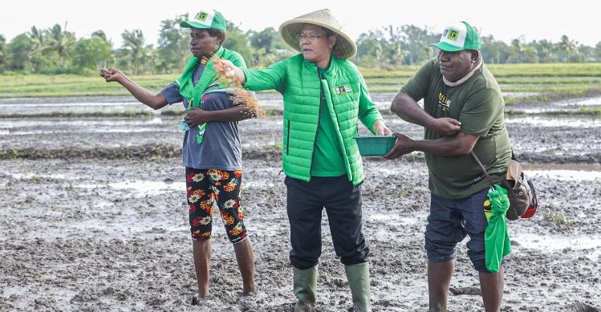

LINGKUNGAN · SOSIAL DAN KEMANUSIAAN
Rancangan Program — Mock-up Akademik
PPP Peduli Bumi dan Kemanusiaan
Merawat lingkungan dan memperkuat kepedulian sosial melalui kegiatan penghijauan, kerja bersama, dan dukungan kemanusiaan.
Jelajahi Program